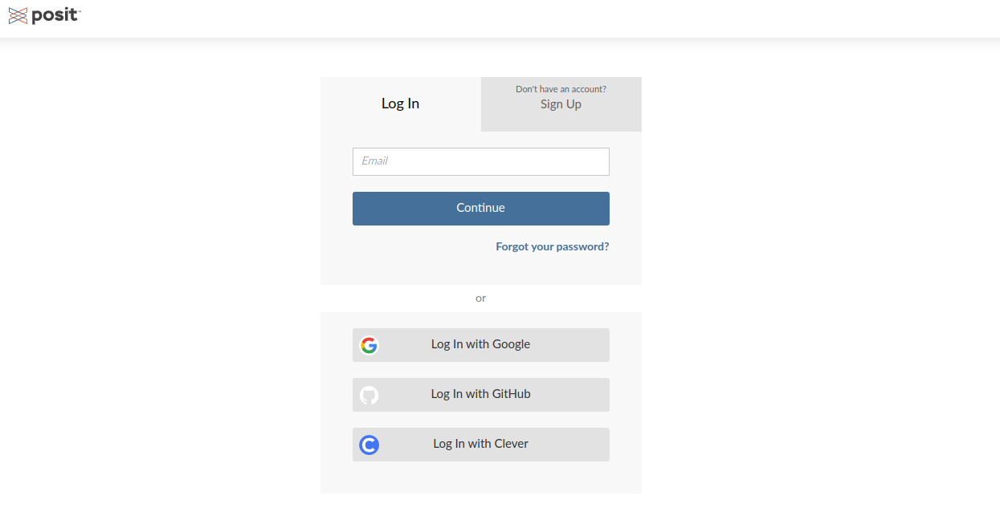
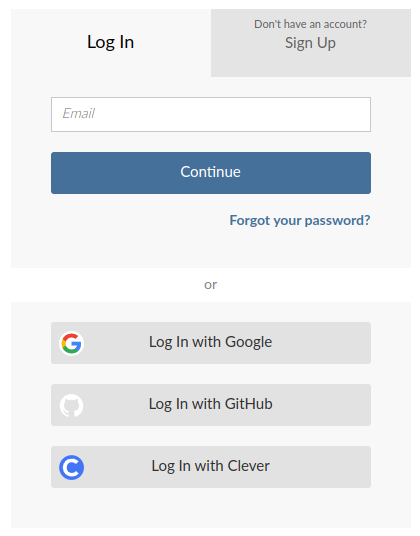
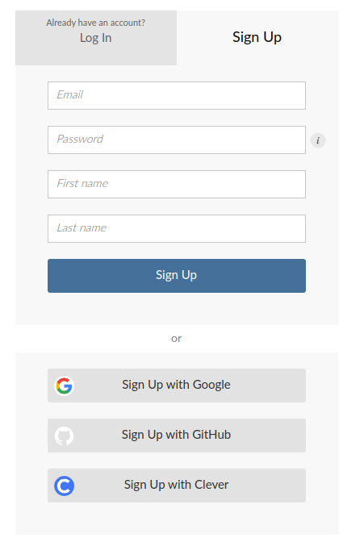
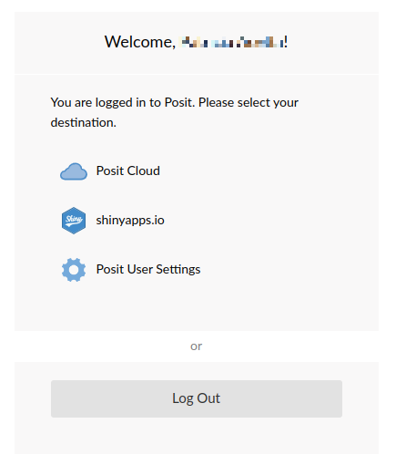
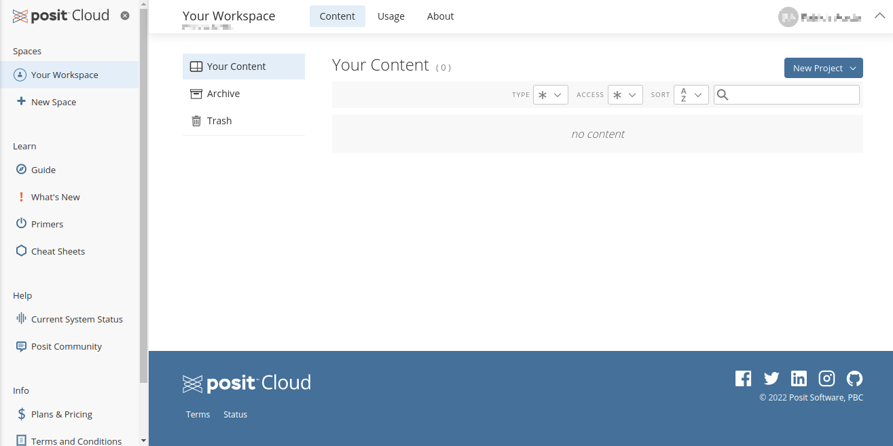
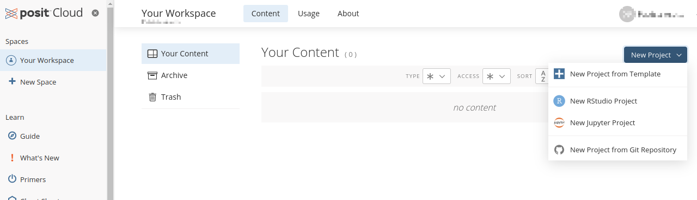
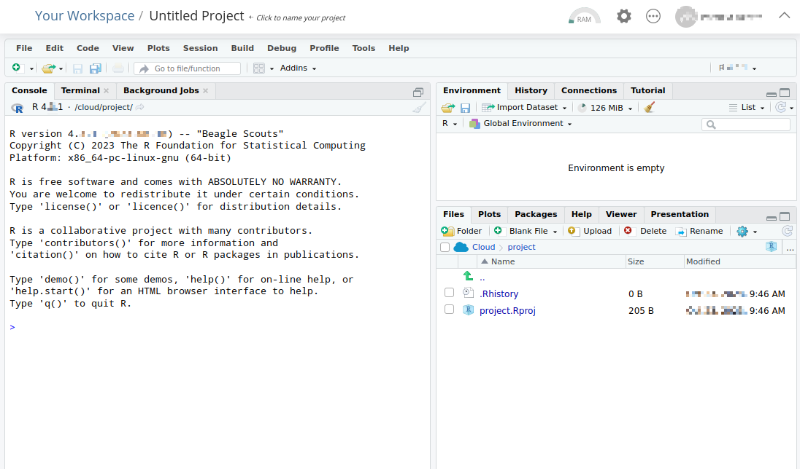
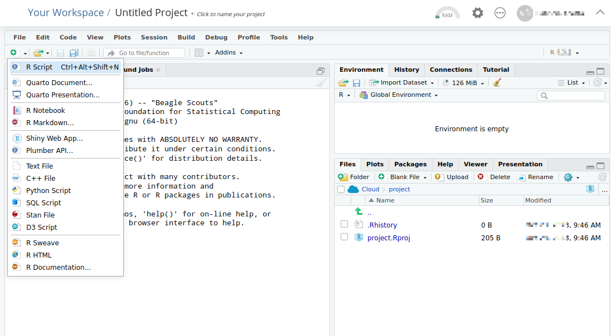
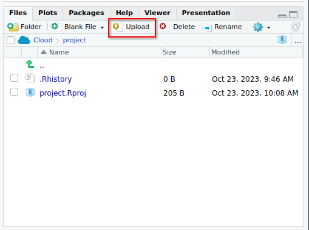
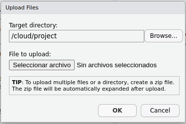

7 RStudio Cloud
En esta seccuión veremos la utilización de una versión en la nube en línea de RStudio. Se explica cómo crear una cuenta y configurar un proyecto en RStudio Cloud, una versión basada en la nube de RStudio.
7.1 ¿Qué es RStudio Cloud?
RStudio Cloud La plataforma RStudio Cloud se define como un Cloud computing. En esta el hardware, software, datos y recursos que utilizabas para tus cursos de estadística pasan de estar en nuestras computadoras a estar “en la nube” https://login.rstudio.cloud/.
Permite a los usuarios escribir código R, crear visualizaciones y realizar análisis de datos directamente desde su navegador web, sin necesidad de instalar R o RStudio en su computadora local.
Ventajas:
Acceso desde cualquier lugar: RStudio Cloud permite a los usuarios acceder a su trabajo desde cualquier computadora con conexión a Internet, lo que facilita la colaboración y el trabajo remoto.
Sin instalación: No es necesario instalar R ni RStudio en el dispositivo local. Esto simplifica el proceso para los principiantes y permite a los usuarios comenzar a trabajar rápidamente sin preocuparse por la configuración del entorno.
Colaboración sencilla: Los proyectos en RStudio Cloud se pueden compartir fácilmente con otros usuarios, lo que facilita la colaboración en tiempo real en proyectos de análisis de datos y ciencia de datos.
Control de versiones integrado: RStudio Cloud permite a los usuarios vincular sus proyectos con repositorios de control de versiones como GitHub, lo que facilita el seguimiento de los cambios y la colaboración en equipos.
Entorno preconfigurado: RStudio Cloud viene con paquetes y bibliotecas comunes preinstalados, lo que ahorra tiempo a los usuarios al evitar la necesidad de configurar su entorno de trabajo desde cero.
Desventajas:
Limitaciones de recursos: La versión gratuita de RStudio Cloud puede tener limitaciones en cuanto a la cantidad de recursos computacionales disponibles, lo que puede afectar el rendimiento al realizar análisis de datos intensivos.
Dependencia de la conexión a Internet: RStudio Cloud requiere una conexión a Internet estable para funcionar. Si la conexión es lenta o se pierde, puede dificultar el trabajo continuo.
Limitaciones de almacenamiento: La cantidad de almacenamiento gratuito en RStudio Cloud puede ser limitada. Los usuarios que trabajan con conjuntos de datos grandes pueden necesitar actualizar a una suscripción de pago para obtener más espacio de almacenamiento.
7.2 Comenzando con RStudio Cloud
Tendrá que registrarse para obtener una cuenta gratuita para comenzar con RStudio Cloud.
7.2.1 Si ya dispone de una cuenta en RStudio Cloud: Log In

7.2.2 Si no dispone una cuenta en RStudio Cloud, debe crearla: Sign Up
Haga clic en el botón Registrarse ( Sign Up )en la esquina superior derecha y aparecerá el siguiente formulario:

A continuación podrá optar por tres opciones:
- Posit Cloud
- shinyapps.io: es una plataforma de servicio (PaaS) para alojar aplicaciones web (apps) Shiny
- Posit User Settings: para editar opciones personales

Seleccionando Posit Cloud, deberá indicar nuevamente el Log In y luego se le presentará el panel de RStudio Cloud:

7.3 Cómo crear un nuevo proyecto en RStudio Cloud
Una vez en el panel, puede hacer clic en New Project – New RStudio Project para comenzar:

Tendrá que esperar entre 30 y 60 segundos hasta que se aprovisione el nuevo proyecto. Una vez hecho esto, verá una interfaz RStudio muy familiar:

Puede renombrar el Proyecto en la esquina superior izquierda, reemplazando Untitled Project.
Todo el IDE en la nube funciona tal como es de esperar. Puede crear un nuevo script R yendo a Archivo – Nuevo archivo – R Script como se muestra a continuación:

7.4 Cómo cargar y trabajar con datos en RStudio Cloud
Para cargar un conjunto de datos a RStudio Cloud hacer clic en el botón Upload en la pestaña Archivos (cuadrante inferior derecho).

Una vez allí, haga clic en Seleccionar archivo y especifique la ruta a su conjunto de datos:

Una vez que el conjunto de datos se carga en la nube, puede cargarlo en el entorno R. Hay dos enfoques:
- Botón Import Dataset: en el cuadrante superior derecho.
- Lector de archivos de R: utilice un paquete R dedicado para cargar archivos (ver sección Importar/exportar datos en R datos de este E-book).